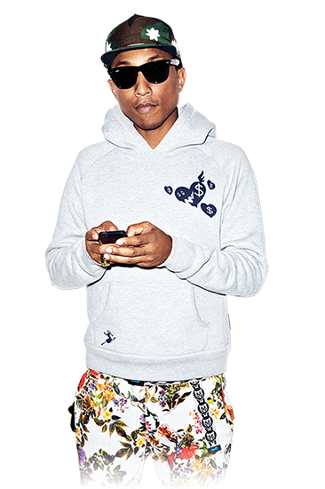

How Pharrell Williams Influenced The sneaker industry And his ADIDAS NMD Hu

Remember when Pharrell was pretty much the poster boy for patent leather Bapestas? He's evolved since then, but his kick game hasn't gotten any less eclectic. Whether he's drawing on a pair of Stan Smiths or wearing Swarovki crystal-encrusted Superstars to the GRAMMYs, Pharrell is as relevant to sneaker culture as ever. He's transcended the lane of putting people onto cool things and instead uses his platforms to promote nobler pursuits, like equality and acceptance for all. How many globally popular celebs do you know using their fame and product endorsements to the same end?